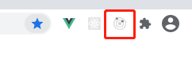
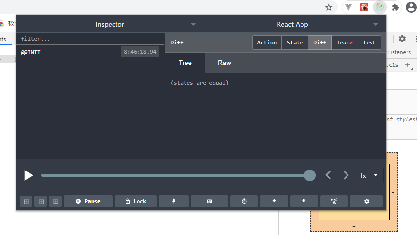

003-redux的chrome扩展
redux也有chrome扩展插件可以将数据可视化
安装后，chrome多了个redux的图标

当我们启动redux后，这个图标依旧是灰色的。
是因为这个插件需要我们在代码里面配合改动
- 项目引入redux-devtools-extension
安装: npm i -D redux-devtools-extension
引入，修改我们创建store的地方
// 修改`/src/redux/store.js`
import {createStore, applyMiddleware} from 'redux';
import thunk from 'redux-thunk';
import {composeWithDevTools} from 'redux-devtools-extension';
import reducers from './reducers';
// 用composeWithDevTools在包裹一层，然后传递给第2个参数
export default createStore(reducers, composeWithDevTools(applyMiddleware(thunk)));
- 再启动项目
可以看到再启动项目后，能看到图标亮了
